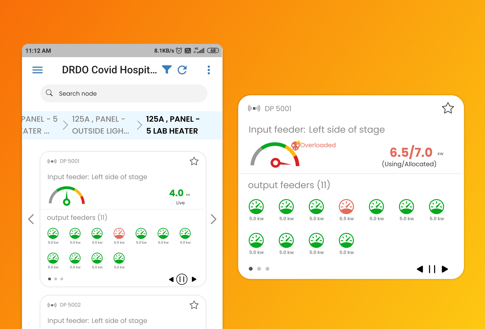

Case studies
Redesigning the Teacher Training app
In this case study, I have discussed how I redesigned some of the user actions to make the app feel more intuitive and easy to use and understand. Humana people to people is a group that does social work in many sectors in India, one of the sections is education, and they help in NeTT (Necessary Teacher Training programme).

Fast Invoice
In this case study, you will learn how I designed the Invoicing app for the recurring services. This was my first ever product I designed which went live on play store and actual people downloaded it. I called them to understand their pain point and needs.

TWS an IOT netwrok monitoring app
In this case study, I have discussed how I helped in designing an information card for an IoT device to help the company prevent any incidents and to give better and faster service. Working on this project, I learned a very important lesson on how to present your design and how to get the right information from the client.
Karobuy customer app
In this case study, I have discussed how I designed the B2C app to let users buy the product from the nearest store in the fastest and cheapest way possible. The most interesting situation I designed for is to tell users for which items they are paying and to train them in buying using a new mental mode.